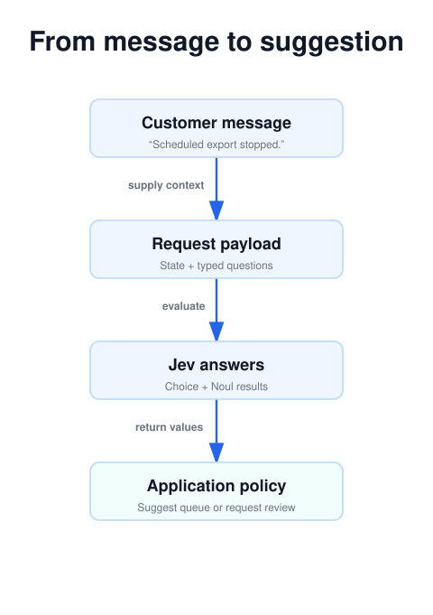
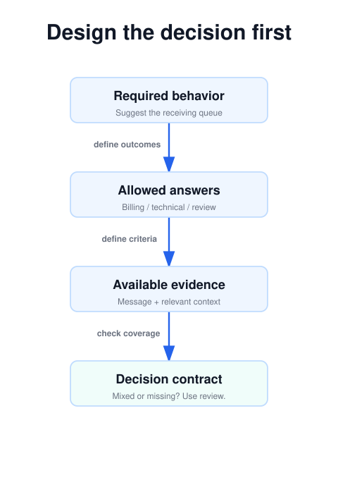

Part 1 of 4 · Documentation checked September 25, 2026
Your App Needs a Decision, Not Another Paragraph: Meet Jev
Part 1 · Understand the role Jev can play before redesigning an application around it.
Start with the decision your software needs
Jev is a model for the moments when software needs a judgment: which team should receive a request, whether a passage is relevant, or how strongly a report matches a rubric. You define the possible answers and provide the material to evaluate. Jev returns structured values that your application can use. It does not write the customer reply that follows.
TypeSafe AI introduced Jev on September 15, 2026, as its first public System One model. The company describes a model architecture and training approach focused on calibrated decisions, called Reinforcement Learning for Calibrated Decisions, or RLCD. That is the vendor’s description of its approach, rather than an independent assessment of its performance. See TypeSafe’s launch announcement.
For a developer, the useful question is concrete: where does the application currently turn messy language into a small decision? That boundary is a sensible place to evaluate Jev. Replacing an entire assistant is a much broader project with a less informative first result.
Process view · static diagram
The whole decision loop
Open the linked SVG for full size; wide diagrams can be scrolled horizontally.
Stop treating every language problem as a writing task
Picture the code behind a basic inbox assistant. It sends a message to a model, asks for a department, removes extra commentary, checks spelling, and finally translates the result into a queue identifier. The useful output might be a single word. Everything surrounding that word exists to make an open-ended interface behave like a small software component.
That is the design opportunity Jev invites you to examine. Start with the value the next function consumes. If it needs one of three queue names, define those three outcomes. If it needs a probability that the sender requested a person, define that proposition. The question becomes easier to review because it has an explicit destination in the application.
This does not mean every existing language-model integration needs replacement. A working classifier with acceptable cost and error rates is a real baseline. Compare the effort of integrating a new service with the benefit on the specific decision. A team handling a handful of messages each week may gain more by clarifying its queue definitions than by changing models.
It also helps to separate a coding assistant from a model used inside the finished application. A coding assistant can help write the client, tests, and interface. Jev is the component that receives the application’s state when the program runs. Installing development tooling does not, by itself, give the finished application a runtime integration or an evaluation strategy.
The basic loop: context, question, decision, action
Imagine a software company receiving this support message: “Our scheduled export has stopped arriving. Manual download still works. Could someone investigate?” A useful first decision is the receiving team. A second is whether the message explicitly requests a person. A third might assess the stated impact on work.
The content you send is called state. It can be text or a structured JSON value. Questions describe the judgments to make about that content. The same request can contain several questions, each evaluated independently against the shared state. This interface is documented in TypeSafe’s introduction and the state guide.
The final step belongs to your software. A predicted department is a routing suggestion. It does not assign a ticket until application code performs that operation. Keeping those steps separate makes the system easier to inspect: you can see whether the mistake came from the supplied context, the question, the prediction, or the action policy.
Choose the answer shape before writing the question
Jev exposes three question types. Pick the one that matches the decision you actually need.
| Type | Example judgment | What to inspect |
|---|---|---|
| Choice | Which one of our support queues fits? | Selected option, option probabilities, confidence |
| Score | How much work is blocked, using described levels? | Weighted score, level probabilities, confidence |
| Noul | Does the customer explicitly request a person? | Probability that the answer is yes |
A Choice fits mutually exclusive categories. Include a review or other option if the named categories do not cover every message. A Score fits an ordered rubric, such as an issue with no functional impact, an issue with a workaround, and an issue that prevents work. A Noul fits a yes/no judgment and returns a value between zero and one.
The distinction matters when requests contain several needs. “Please correct my invoice and fix the export” may not have one natural department. Your design could choose review, or ask separate questions about the two concerns and let code arrange multiple owners. Neither solution emerges merely from choosing a more powerful model. You must decide how the organization handles mixed requests.
Same message · three answer shapes
What does the next piece of code need?
“Which queue owns this?”
billing | technical | reviewOptions compete. Include an outcome for cases that do not fit.
“How much work is blocked?”
0: none · 1: workaround · 2: blockedThe returned mean summarizes probability across your described levels.
“Did they request a person?”
0 ≤ noul ≤ 1A middle value means uncertainty about yes, not medium intensity.
Three design mistakes you can catch before calling the API
The first mistake is making options overlap without stating a precedence rule. “Account” and “billing” both sound plausible for a subscription cancellation. If one team owns cancellation requests, put that ownership in the descriptions. If ownership genuinely depends on missing information, review is the honest result. Otherwise you are asking the model to invent an organizational policy.
The second mistake is confusing presence with degree. “Is the customer frustrated?” asks whether a proposition holds. “How much work is blocked?” asks for a position along a defined dimension. A customer can be furious about a cosmetic issue or calm about a complete outage. Combining those dimensions into one urgency number makes it harder to understand why an item rose to the top of the queue.
The third mistake is assuming the correct answer must be among the options. Consider a support message asking about a partnership. If the only options are billing and technical, the model has no way to name the missing destination. An explicit review outcome protects the meaning of the selected categories. It also gives you a useful product signal: repeated review cases may reveal a missing queue.
You can catch all three mistakes with a paper exercise. Give a colleague the proposed state and question, without explaining what you intended. Ask them to choose an outcome and identify the evidence. If their answer depends on information outside the supplied material, decide whether to add that information or narrow the decision. This is a cheap way to improve the experiment before paying for inference.
A constrained answer can still be incorrect
A model can select a permitted label and still misunderstand a ticket. A billing label for an export bug is valid data with the wrong meaning. Treat schema compliance and decision quality as separate properties.
That distinction is especially useful when reading claims about hallucinations. TypeSafe’s launch discussion ties its guarantee to schema matching. The company’s own Jev 1.13 limitations also describe wrong answers, including difficulties with literal wording, numerical tasks, distracting context, and adversarial content. A closed answer space does not make customer input trustworthy or the interpretation infallible.
For this series’ support example, an ordinary application rule should verify that the selected queue exists and that the acting account may assign tickets. The model’s role is to interpret the request. Access control, record ownership, and the mechanics of changing a ticket remain explicit software responsibilities.
Similarly, a customer saying “route this directly to engineering” is evidence about what the customer wants. It does not establish that the ticket meets the company’s engineering criteria. Put that distinction into the question, then test messages that try to blur it.
Where the design is useful—and where another tool fits
A promising first task has a bounded answer space, examples a reviewer can label, and a reversible result. Queue suggestions satisfy those conditions. You can run the classifier beside the existing workflow and compare the suggestion with the destination chosen by staff.
If you need a newly written troubleshooting response, use a text-generating model or a maintained response template. If you need an exact count of open tickets, query the database. If you need to determine which record a phrase refers to, first collect plausible records and then evaluate the match. These are architectural choices: give each component a job whose output can be checked.
A narrow state is also easier to audit. The ticket message, product area, and relevant queue definitions may be enough. An entire account history makes it harder to establish what affected the decision. Add context when a specific error shows why it is necessary, rather than treating more text as an automatic improvement.
The comparison with an existing classifier should include a simple baseline. Some tickets may already carry a reliable form field identifying the department. In that case, using the form field can be the right answer. Jev’s value should appear on the ambiguous language that your current rules handle poorly.
Look beyond routing, but keep the output checkable
The same approach can support a document-reading tool. Code retrieves several candidate passages. A question judges each passage’s relevance to the reader’s request. Code then orders the candidates and displays the original text. The model contributes semantic judgment, while the source material remains available for inspection. This is an architectural example, not a claim that Jev searches your files without an integration.
Selection can also help with extraction. Suppose ordinary parsing finds three email addresses in a message: the sender, a copied colleague, and the requested contact. The difficult part may be deciding which address plays the requested role. Presenting candidates turns that problem into selection. However, if parsing missed the right address, a selection model cannot recover it from a candidate list that does not contain it.
Another useful design is a scored reading queue. Define separate rubrics for relevance and technical depth, save those judgments, and let a reader change their relative weights. The displayed order can change without another model request when the evidence and rubric meanings are unchanged. TypeSafe’s composite scoring guide documents this general pattern of combining separate dimensions in code.
For all of these ideas, make the current input boundary explicit. The Jev 1.13 model specification lists text input, including text represented in JSON, rather than direct image, audio, or video input. An audio-driven tool therefore needs transcription before Jev evaluates the words. Any transcription error becomes part of the evidence problem, even if the downstream answer has the correct type.
Your first action: write a one-page decision contract
Before making an API call, write down the decision, the allowed outcomes, the evidence available to the model, and what happens when the answer is uncertain. For the support example, the contract could be: suggest billing or technical only when one clearly applies; otherwise request review; never change the ticket during the initial experiment.
Then collect a small set of representative messages, including mixed requests and missing information. Have a teammate apply the contract. If two people cannot agree, revise the definitions before judging the model. That gives the next article’s API integration a useful target: implementing a decision you can explain and evaluate.
Process view · static diagram
A decision contract before an API call
Open the linked SVG for full size; wide diagrams can be scrolled horizontally.